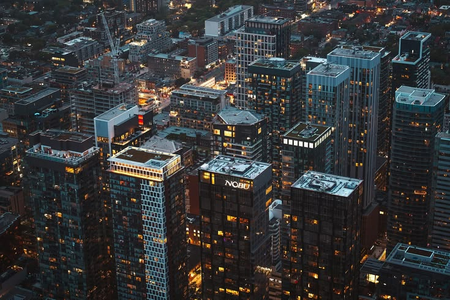

The Core Mission
Dedicated to promoting peaceful, inclusive societies. Three key outcomes:
- Reduction in global violence and crime rates.
- Equal access to legal representation for all.
- Eradication of systemic corruption.
UN Sustainable Development Goal
Advocating for the global stability, equal rights, and transparency required to build a sustainable and just future for all.

Dedicated to promoting peaceful, inclusive societies. Three key outcomes:
Strong institutions are the backbone of stable societies. This goal protects:
Every individual can advocate for transparency. Start today:
Dive deeper into the critical areas of Peace, Justice, and Strong Institutions.